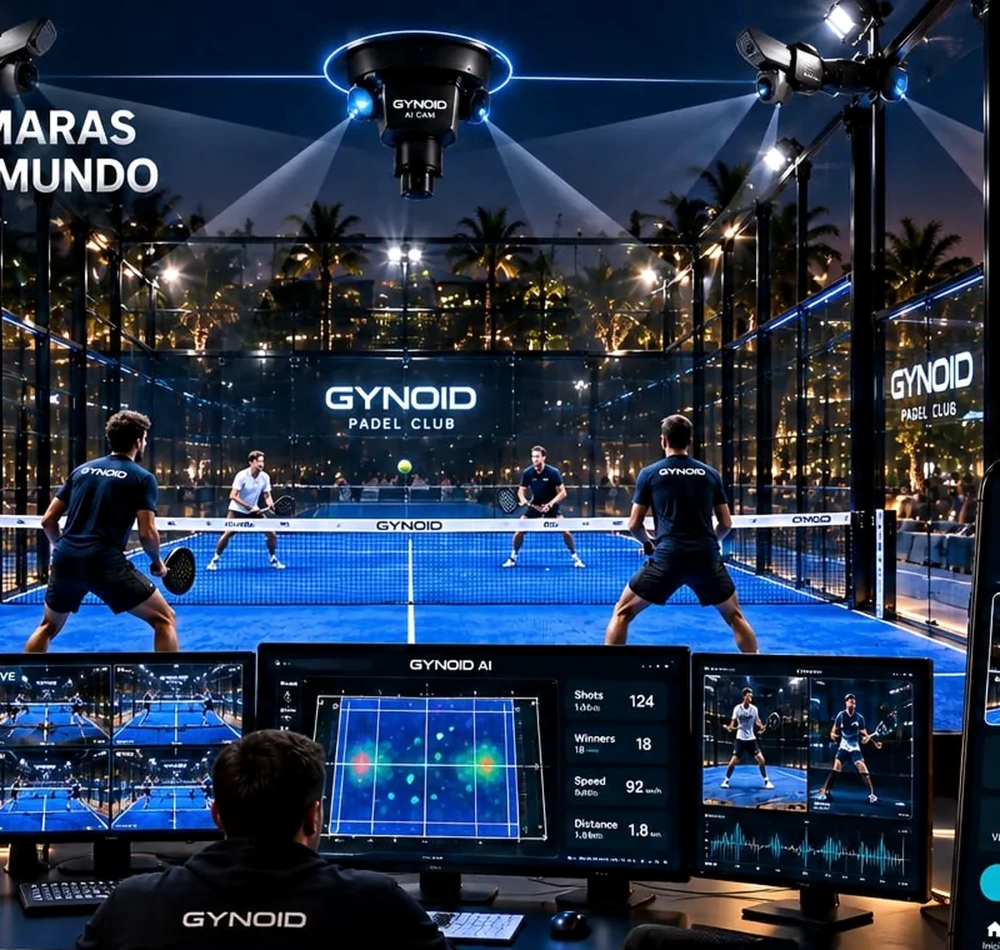
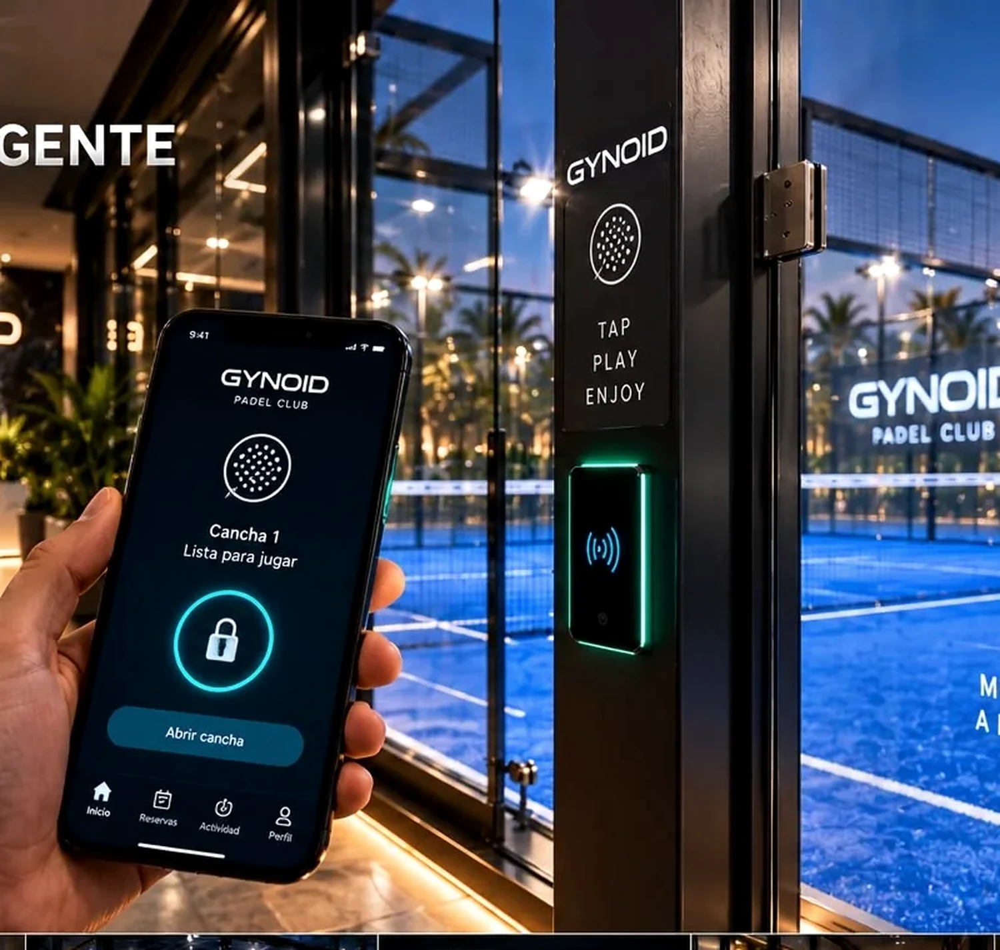
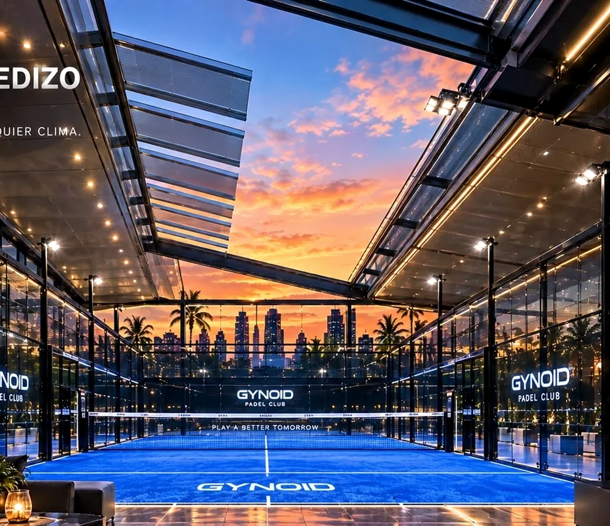
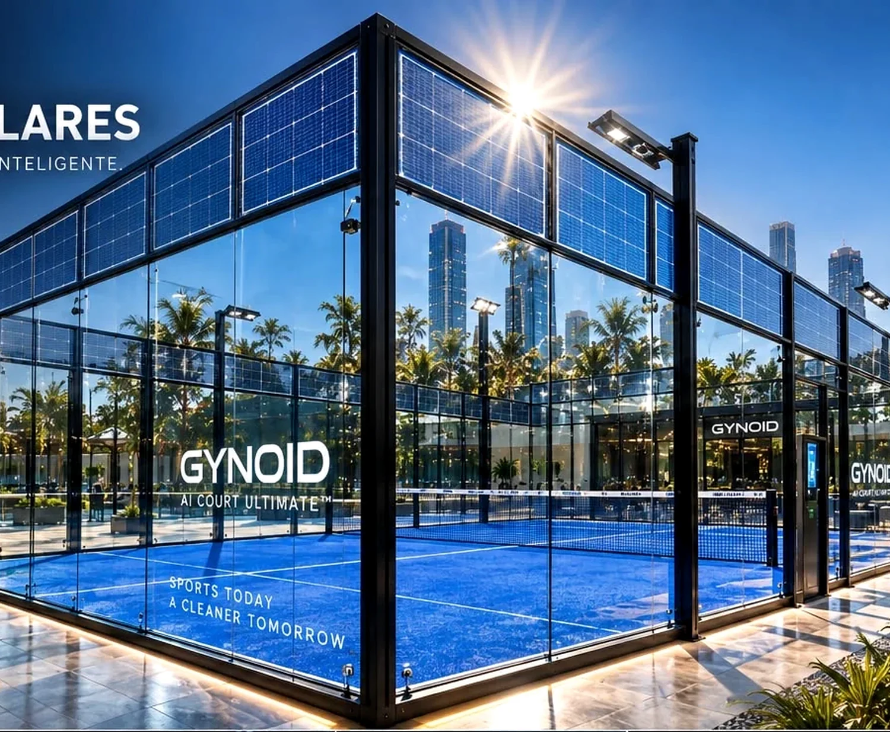
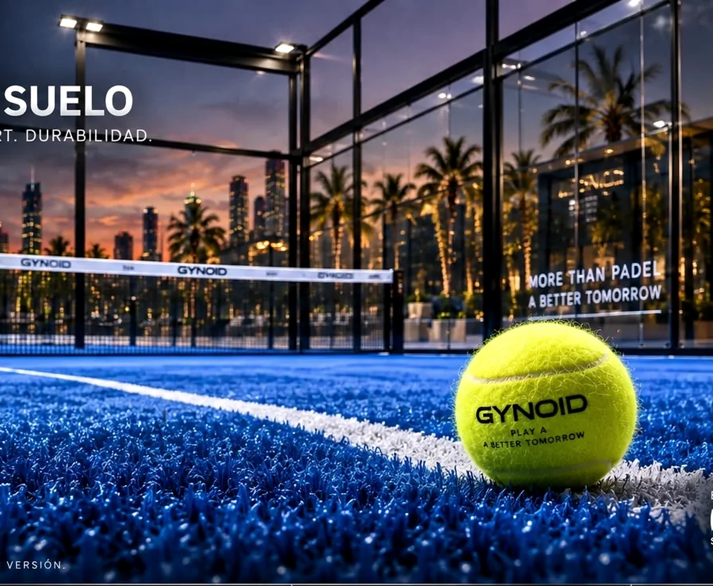
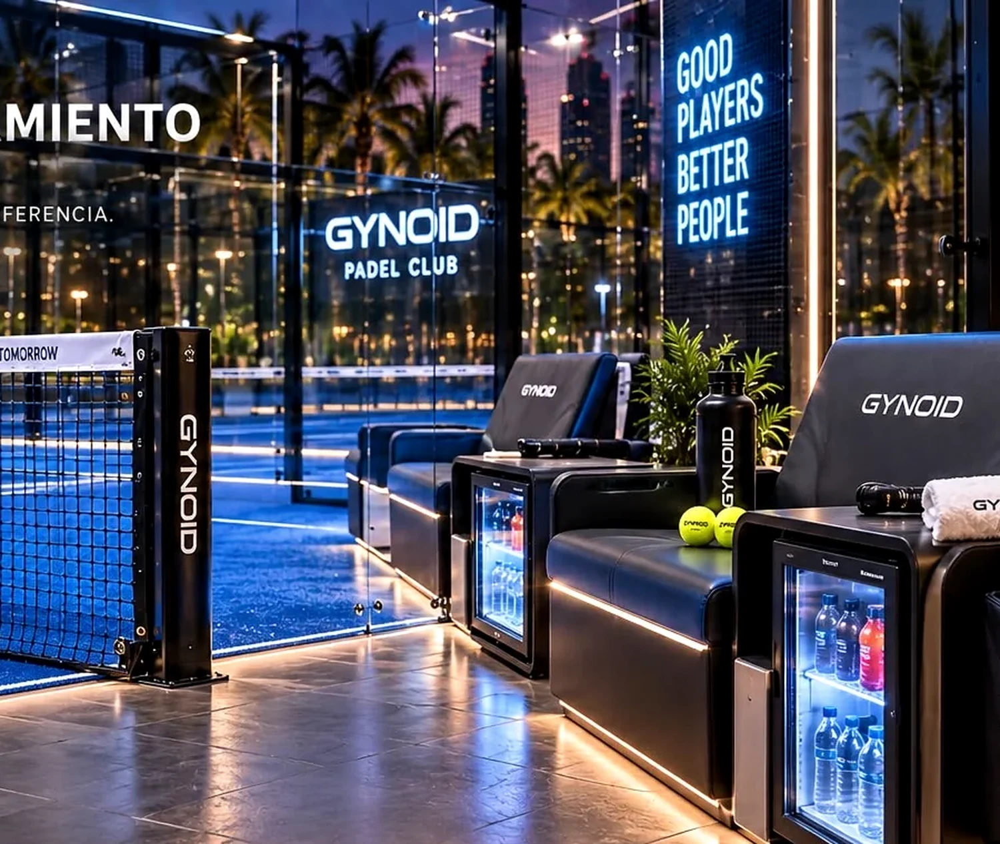

Performance
Materiales, superficie e iluminación pensados para jugar al máximo nivel.
INTELLIGENT PADEL · PREMIUM EXPERIENCE
Una plataforma de pádel premium que combina deporte, IA, automatización, media, energía y hospitality en una misma experiencia.
MORE THAN PADEL
Gynoid eleva la pista desde tres dimensiones: performance para el jugador, tecnología para el operador y experiencia para el público, la marca y el entorno.
Ver el ecosistema completo →Materiales, superficie e iluminación pensados para jugar al máximo nivel.
App, IA, cámaras, acceso inteligente, sensores y control remoto.
Diseño, confort, hospitality y una puesta en escena que diferencia el espacio.
Publicidad, eventos, contenido y nuevas posibilidades de explotación.
02 / THE GYNOID SYSTEM
Haz clic en cada módulo para ver cómo cambia la pista y qué aporta al proyecto.
THE FOUNDATION
Estructura premium, cerramientos panorámicos, superficie técnica, red e iluminación se diseñan como un producto coherente, no como una suma de componentes.
03 / SIGNATURE TECHNOLOGY
GYNOID AI
La cámara deja de ser un accesorio. Forma parte del producto: grabación automática, análisis, highlights, streaming y una experiencia digital que continúa cuando termina el partido.

GYNOID MEDIA
El perímetro digital abre una nueva dimensión: publicidad, branding, torneos, activaciones, contenidos 3D y eventos. La pista deja de comunicar solo cuando se juega.
GYNOID ACCESS
Jugadores, invitados, entrenadores y staff pueden acceder con una experiencia digital coherente: app, NFC, Bluetooth y QR temporal, con control de actividad y horarios.



04 / FROM COURT TO ASSET
La propuesta Gynoid no depende únicamente de vender horas de pista. El propio espacio puede convertirse en soporte publicitario, venue de eventos, generador de contenido y elemento diferenciador de un club, hotel o proyecto inmobiliario.
Explorar un proyectoOperación digital y experiencia de acceso más fluida.
Superficies digitales para campañas, sponsors y activaciones.
Torneos, lanzamientos, retransmisiones y experiencias de marca.
Partidos, highlights, streaming y una relación digital con el jugador.
05 / PREMIUM EXPERIENCE

Agarre, confort y durabilidad como parte de la experiencia.

Bancos, refrigeración, carga y accesorios con el mismo lenguaje de diseño.
Iluminación, materiales, cristal y paisajismo para transformar una pista en un espacio aspiracional.
06 / DESIGNED FOR
Diferenciación, experiencia y tecnología para elevar el valor percibido del club.
Hoteles, resorts y destinos lifestyle que buscan una instalación memorable.
Residencial y proyectos singulares donde el deporte también construye marca.
Espacios pensados para activaciones, contenido, lanzamiento y entretenimiento.
07 / VISUAL GALLERY
BUILD THE NEXT COURT
Clubs, hospitality, real estate, instalaciones privadas y proyectos internacionales. Cuéntanos qué quieres construir y diseñamos la experiencia alrededor.
Configura email y redes enjs/config.js.